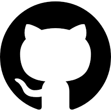
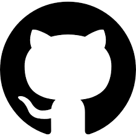

Social Links:
,
 ,
Mail (Not available right now)
,
Mail (Not available right now)
Disclaimer
The entries of this journal is entirely myBertrand Russell own thoughts, observations and philosophies.
You DO NOT have
to
agree.
If any of the words or entries go against your philosophies then feel free to consider them as sarcasm
and/or as jokes
and ignore them for both our sakes.
"The satisfaction of not participating in an argument far outweighs that of winning one"
~ Someone probably
Recommended Past Entries:
None
Prerequisite Past Entries:
None
Thinking - The Most Underrated Activity
Tags: Life, Observations,
“The whole problem with the world is that fools and fanatics are always so
certain of themselves, and wiser people so full of doubts.”
~ Bertrand Russell
While that is the whole problem, it doesnt take much to realize that the problem itself stems from a
very simple action - or lack of an action thereof. As a member of the somewhat modern
generation (Gen Z) one of the most obvious flaws of our generation is that of not thinking. This does
not imply that previous generations thought a lot - which if they did a lot of the situations wouldn't
be as bad as they are but that's a topic for another day - its just that the newer ones are more akin to
thinking less. And while I could blame it on the oOh mObIlE pHoNeS bAd I don't think its justified to
blame it all on one thing. Besides, I am not willing to complain as complaining leads to nowhere.
Socrates back in his days fictionally said people to "know thyself" and that phrase is
so strong that he received Hemlock as a treat. While that is a very sarcastic summarized description
about the whole event (and one that originates from Greek mythology and/or Plato's play which requires
far more research than I am willing to do) you can easily understand that the depth of his words and
what it could have done for the people. The words "Know Thyself" are, however, very deep compared
to everything else and from my personal experience I have seen that people understand very little of. In
fact, I, myself, find newer interpretations of this very phrase every now and then. And I have been
practising this for almost four years at this point. So, it would probably not be wrong to assume that I
have barely scratched the surface of this phrase.
So, what is the point of all these? Well, the point - as the title suggests - is to think. (I think) The
first and foremost step of understanding the universe, the world and its people is to understand,
realize and (then) accecpting oneself. And the first step towards that is thinking. Though, thinking is
one of the easiest activities ever keeping the train of thoughts in the correct track is not. However,
in order to reach somewhere, you must start from your current place - wherever that might be.
Every organ in the body has a purpose. Arms and legs are for motor functions, eyes are to see, heart is
to pump blood and likewise the brain is to think. Again, that does not imply that all the previously
mentioned organs cannot and does not have other functions. The brain, along with maintaining the
countless other bodily functions, is supposed to be used for thinking. As such, not thinking before
taking actions or decisions at all feels like disrespecting this fundamental organ. The purpose of the
brain feels incomplete if not used at its full potential since not using it does not yield any benefit
whatsoever. Furthermore, in a time where (I assunme) more than 60-70% of the population are
busy shutting their brain off to enjoy as much of the content fed to them, using thinking ahead feels
like an easy win life.
Though I might not live by it, I understand the appeal of an unplanned adventure. A life filled with an
unknown future where you solve your problems on the go is exciting and I get that. But (1) an "unplanned
adventure" without any thinking at all is why people compare bravery with foolishness and (2) even then
you have to think in order to face the adversities.
To advocate further in why thinking is important - you have to remember that no matter how much you try
to deny it you are, as of right now, a human. And the prehistoric self assurance of "What separates
humans from the animals is the ability to think" is only relevant WHEN you think. Shutting your
brain off and trying to pretend that you are better than a beast waiting for its next bit meal and/or
dopamine release feels like an insult towards the whole humanity - but above all yourself. You are not
an animal (I mean yes biologically you are but that's not what we are talking about here) and your
difference comes from your ability to think and what got us so far is the ingenuity and ability to use
that thought and making it a reality.
But, if I was unable to convince you still then my Hail Mary is that thinking is fun. I don't know about
the rest of the world but there is a fine beauty in thinking. You can conjure up anything of yours your
brain can desire and I don't think there is anything more fun than that. You can think of "what if"s and
"what could be"s, you can conjure up your own fantasies or forms of art, you can think of all possible
ways to make your life better - you can even think of how this entire entry is dumb and pointless and
you can write better against it. The limitations are only as much as YOU set it to be. In fact, you can
spend minutes thinking about life and how you are living it only to realize its been hours. I don't
think everyone will enjoy that but it takes literally no effort - especially no physical ones. You can
do this for hours and not feel bored because you can think of everything that entertains you. Not to say
thinking is all you should do but you should not NOT THINK most of the time.
And if I still somehow failed to show you the appeal of thinking then its definitely my fault. But do
think about thinking - you, as a human, are meant to do it.
But for the rest of the people who I have captivated the attentions of - first of all, thank you for
considering my words. I know its hard (for a lot of you) to read long paragraph. Secondly, I want to
start off going into (what I think) are the technical side of things; when and how to think.
As mentioned above, thinking is easy - keeping thoughts in check is not. However, as with most skills,
the answer lies in pracitce. Once again, we go back to the wisdom of "Practice makes perfect" and
in this case its to think. So, the more you think the more you realize how to control your own thinking.
Feels counterintuitive but anyone who has played any Roguelike in their lives knows that in order to
progress further you need to step back with all the progress to get a better start. While its not very
practical in real life, I find it very practical for soft skills - especially thinking. The more you
think the more you understand and with that you can return to the original issue and then use that
knowledge to think even further. And for that, one needs to constantly think. Now, constantly thinking
sounds ridiculous - and it is - but in this context "constantly" is just the highest level of frequency.
Just as there really isn't any proper time to think - there really isn't any time not to think. One can
and should think every opportunity one gets to get a better grip of what "thinking" really is and then
maybe find the meaning of what all the previous (wise) advices really were.
Of course, its not without flaws as you need some form of moderation to it. Free thinking, as nice as it
sounds, is not what it sounds like. Yes, you are allowed to think about anything and everything but
losing ethics, values and moralities while thinking can be very detrimental to the very essence of
thinking itself. Every once in a while it is better to check back and wonder if the thoughts really
align with the society, people you love, people who love you and people who you want to be.
I plan to write more about this in future so I'll keep it short here as of now. The easiest answer to
this (as it is with a lot of things) is - it depends. The main factor it depends on is you. That further
divides into several categories. But if I were to give a short explanation of it, it would go along the
lines of:
A bit of thinking will make you realize that at the end of the day, the main things required to be
successful and/or happy really mostly depends on these four questions. But again, those are
discussions for another day. But to put it into perspective, time is important and (I think)
thinking about things that are irrelevant are times wasted. Likewise, every once in a while it is
better to check on the thoughts if they align with who you are and what you want to be. There is
definitely a point to thoughts that that don't concern you but those should not be cluttering your
mind. Then again, as the first point suggests - if you are someone who has the leisure and luxury to
think about thoughts that do not concern you then be my guest. I am here to guide you to help you
find your own path; not lead you down an objective one. I don't think anyone is (and should be)
allowed to make others "think a certain way" just because the other thought process is different.
Yes, there are dangerous thoughts and yes some thoughts definitely lead to unforseen disasters.
However, forcing people to think a certain way feels distasteful to me. But again, to force down
this philosophy down the throat is just hypocrisy at its finest and even though I am one of, if not
the biggest hypocrite I know I am not willing to do anything that inhibits my dopamine release and
leaves a bad taste in my own mouth.
That being said, I hope I at least encouraged some people to start (and/or give a new way of)
thinking. The point of my journal is not to prove a point or send a message - its to help the people
like me who might not have the proper guidances or help I had. And since I started thinking and
wondering from a very long time ago, I felt the need to spread the word about the fun that is
thinking. Thinking is fun and without thinking we wouldn't be where we are today.
I hope you had fun and I hope you have a rest of your day, evening and night.
Social Links:
,
 ,
Mail (Not available right now)
,
Mail (Not available right now)